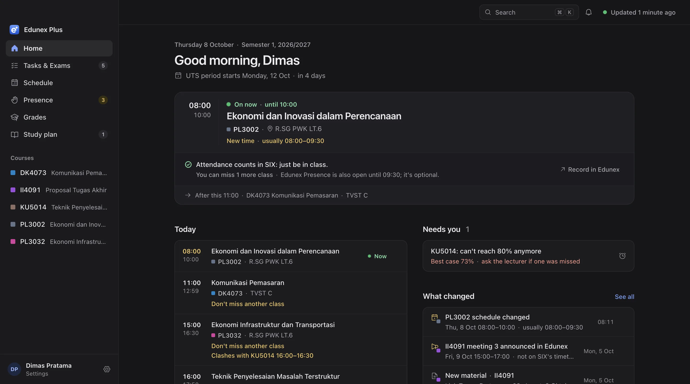

Edunex and SIX, in one calm window.
Edunex Plus is in alpha. Join the first ITB students using it, and help shape what it becomes.
Join the alphaEdunex Plus is in alpha. Join the first ITB students using it, and help shape what it becomes.
Join the alpha